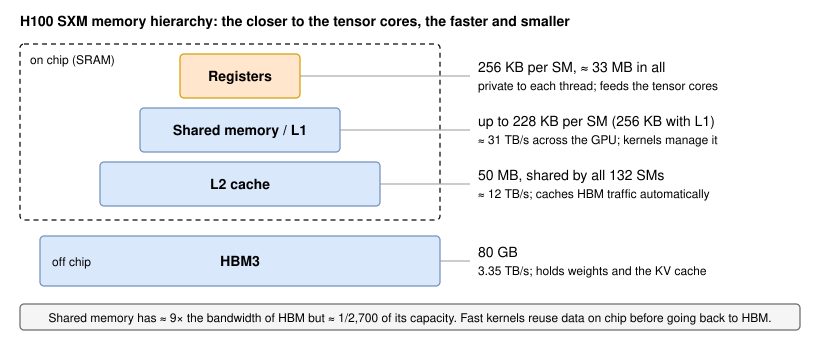
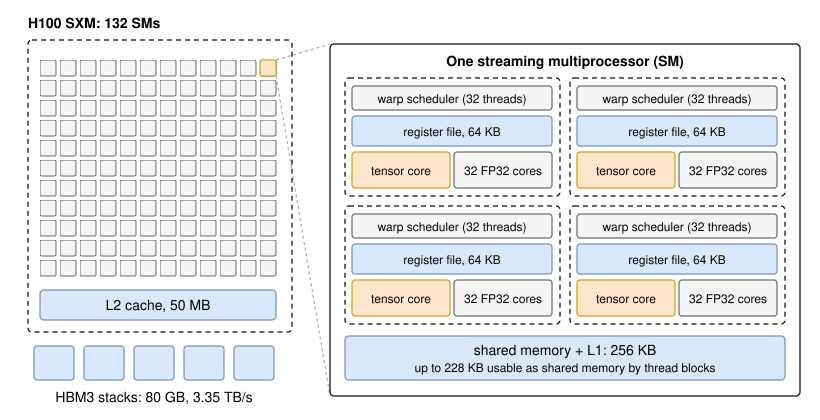
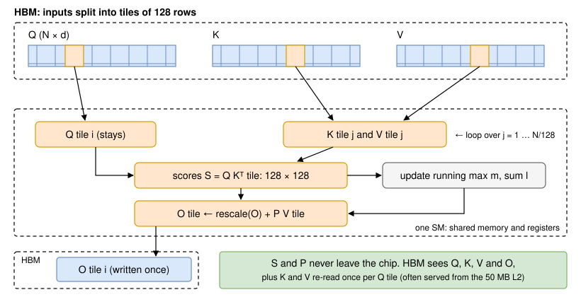
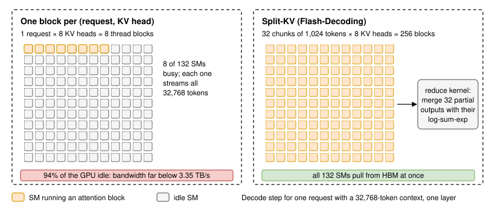
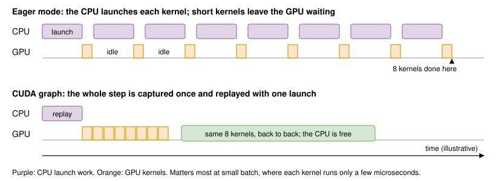
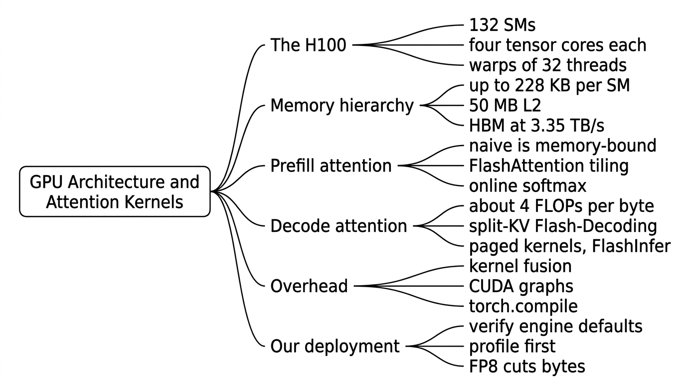

GPU Architecture and Attention Kernels
Introduction
Every number in this course so far has come from two properties of a GPU: how many floating-point operations it can do per second and how many bytes it can read from memory per second. Those two numbers set the ceilings. How close a server gets to them is decided by the kernels, the small GPU programs that run each operation of the model: every matrix multiply, every normalization, and above all every attention layer.
A kernel is fast when it keeps data close to the arithmetic units and reuses it before going back to main memory. An H100 has a few hundred kilobytes of very fast on-chip memory next to each group of cores and 80 GB of much slower high-bandwidth memory (HBM) further away, as Figure 1 shows. The best attention kernels, starting with FlashAttention [1], are fast precisely because they rearrange the computation so that the large intermediate results never leave the chip.

In this lesson, we look at the parts of a GPU that matter for inference, show with byte counts why naive attention is memory-bound, walk through FlashAttention's tiling and online softmax and the kernels built for decoding, and cover the overheads around the kernels: fusion, CUDA graphs, and torch.compile. We finish with the questions interviewers ask and a decision about which of these optimizations matter for our deployment.
Clarifying the Problem
Kernel questions in interviews usually start from a cost or latency complaint and test whether the candidate knows which layer of the stack to look at. Here is a typical exchange:
Candidate: Which model, engine, and hardware are we talking about?
Interviewer: Llama 3.1 8B Instruct in BF16 on H100 SXM GPUs, served with vLLM using its default settings.
Candidate: What does the traffic look like, and what are the targets?
Interviewer: Chat requests with about 2,000 prompt tokens and 500 output tokens. The targets are p95 TTFT under 500 ms and p95 time per output token under 25 ms. A few customers upload 32K-token documents.
Candidate: How loaded is each GPU today?
Interviewer: About 5 requests per second per GPU, which keeps roughly 53 streams decoding at once with steps of about 21 ms (Lesson 19, GPU Utilization).
Candidate: What is being proposed?
Interviewer: A teammate wants to write custom CUDA kernels to cut the GPU bill. Another says vLLM already uses the best kernels. Who is right, and how would you find out?
Candidate: Do we have profiles of the running server?
Interviewer: Not yet. Tell us what you would look for.
The question underneath is: where does the time inside one forward pass go, which parts are already handled by off-the-shelf kernels, and what is left to gain? To answer it, we need a working picture of the hardware the kernels run on.
The GPU That Runs the Kernels
Streaming multiprocessors, warps, and tensor cores
An H100 SXM has 132 streaming multiprocessors (SMs); the full GH100 die has 144, and some are disabled on the product [4]. Each SM is split into four partitions. A partition has a warp scheduler, a slice of the register file, 32 FP32 cores, and one tensor core, the unit that performs small matrix multiplies in a single instruction. Figure 2 shows the layout.

Threads are scheduled in groups of 32 called warps, which execute the same instruction together. An SM can hold up to 64 resident warps (2,048 threads) from up to 32 thread blocks [4]. A kernel launch is a grid of thread blocks; the hardware hands blocks to SMs as they free up. Two consequences matter for inference. A kernel with fewer blocks than SMs leaves part of the chip idle for its whole duration. And a warp waiting on memory costs nothing if other resident warps have work, which is how GPUs hide memory latency.
Almost all of the H100's 989 dense BF16 TFLOPS live in its 528 tensor cores [4][5]. The FP32 cores and special-function units handle everything else: additions, normalizations, and the exponentials in softmax. The gap is large: the FlashAttention-3 paper notes that an H100 SXM5 offers 989 TFLOPS of FP16 matrix math but only 3.9 TFLOPS of special functions such as the exponential [3]. A kernel that spends too long on softmax leaves the tensor cores idle.
Hopper added hardware that the newest kernels rely on: the Tensor Memory Accelerator (TMA), which copies whole tiles between HBM and shared memory asynchronously; thread block clusters with distributed shared memory, which let SMs read each other's shared memory; and asynchronous warpgroup matrix-multiply instructions (WGMMA) [3][4].
The memory hierarchy
Table 1 lists the levels a kernel can use. NVIDIA publishes capacities; the on-chip bandwidths come from the FlashAttention-3 paper's description of the H100 [3].
| Level | Capacity (H100 SXM) | Bandwidth | Who manages it |
|---|---|---|---|
| Registers | 256 KB per SM (65,536 32-bit registers), ≈ 33 MB in all | Highest; feeds the tensor cores directly | Compiler, per thread |
| Shared memory / L1 | 256 KB per SM combined, up to 228 KB as shared memory | ≈ 31 TB/s across the GPU | The kernel author, per thread block |
| L2 cache | 50 MB, shared by all SMs | ≈ 12 TB/s | Hardware |
| HBM3 | 80 GB | 3.35 TB/s | The kernel, through loads and stores |
Table 1: The H100 SXM memory hierarchy [3][4][5]
Shared memory and registers together are often called SRAM in the kernel literature. The trade-off is stark: shared memory has about 9 times the bandwidth of HBM, but all of it together is about 30 MB, against 80 GB of HBM. Any intermediate tensor larger than a few hundred kilobytes per SM must be written to HBM, and that write, plus the read that follows, is what slows naive kernels down.
Kernels and launch overhead
The CPU starts each kernel with a launch: it sets up arguments and pushes a command to the GPU. A launch costs a few microseconds of CPU time even before any Python framework overhead. NVIDIA's CUDA Graphs article measured a 2.9 µs kernel costing 9.6 µs per kernel when each launch was followed by a synchronization, 3.8 µs when launches were overlapped in a stream, and 3.4 µs when the kernels were captured into a graph [10]. When kernels are long, this does not matter. When they are short, as in decoding at small batch, the CPU becomes the bottleneck. We return to this when we discuss CUDA graphs.
Attention Kernels
Why naive attention is memory-bound
Written directly, attention is three operations: compute the scores , apply softmax to get , and multiply . A straightforward implementation runs each as its own kernel and stores and , each an matrix per head, in HBM between them, as Figure 3 shows.

Count the bytes for one 8,192-token prompt of Llama 3.1 8B in BF16. Per head and layer:
- Score matrix: bytes = 128 MiB. The same holds for .
- Traffic: write , read it for softmax, write , read it for the product: 4 × 128 MiB = 512 MiB. By comparison, , , , and for one head are 2 MiB each, 8 MiB in total.
- Math: and each cost FLOPs, so GFLOPs per head and layer if the full matrix is computed.
The arithmetic intensity is about 34.4 GFLOPs ÷ 537 MB ≈ 64 FLOPs per byte, far below the H100's ridge point of 295 FLOPs per byte (Lesson 2, Prefill vs Decode). Across 32 heads and 32 layers, the score and probability matrices move 512 GiB, which takes at least 164 ms at 3.35 TB/s, while the attention math itself needs about 36 ms at peak. The rest of the 8,192-token prefill, the linear layers, takes about 266 ms at 50% MFU, so naive attention would add more than half again to the prompt's prefill time. Capacity fails too: at 32K tokens, one head's score matrix is 2 GiB and one layer's is 64 GiB, which cannot coexist with the model and its KV cache on an 80 GB GPU.
The FlashAttention paper states the general result: standard attention needs HBM accesses [1]. The term is the problem.
FlashAttention: tiling and online softmax
FlashAttention computes exactly the same result without ever writing or to HBM [1]. It splits into tiles of rows (for example 128) and gives each tile to one thread block. The block loads its query tile into SRAM once, then streams tiles of and through shared memory. For each pair it computes a 128 × 128 block of scores in registers, turns it into probabilities, and adds their weighted values into an output accumulator. Only the finished output tile goes back to HBM. Figure 4 shows the loop.

The difficulty is softmax: each probability needs the maximum and the sum over the whole row of scores, but the kernel only ever sees one tile at a time. The fix is online softmax [6]: keep a running maximum , a running sum , and an unnormalized output , and correct them whenever a new tile raises the maximum. For a new tile of scores :
After the last tile, the output is . Figure 5 works a tiny example: four scores in two tiles give exactly the same result as one softmax over all four.

FlashAttention does slightly more arithmetic than the naive version, because of the rescaling and, in training, recomputation in the backward pass. It is still much faster because it moves far fewer bytes. Its HBM traffic falls to , where is the SRAM size; with of 64 to 128 and around 100 KB, that is many times less than the naive count [1]. The paper's measurement on GPT-2 medium (sequence length 1,024, forward plus backward on an A100) makes it concrete: 75.2 GFLOPs instead of 66.6, but 4.4 GB of HBM reads and writes instead of 40.3 GB, and 7.3 ms instead of 41.7 ms [1].
For our 8,192-token prompt, the minimum traffic is just , , , and : 160 MiB per layer, or 5 GiB across 32 layers, about 1.6 ms at 3.35 TB/s, roughly 100 times less than the naive 512 GiB. Real kernels re-read and once per query tile, but query tiles running at the same time read the same key tiles, so many of those reads hit the L2 cache. With the traffic gone, attention becomes compute-bound, and causal masking lets the kernel skip tiles above the diagonal: about 17.6 TFLOPs, or 36 ms at 50% MFU, on top of the 266 ms for the linear layers.
If asked why FlashAttention is faster even though it does more FLOPs, answer in bytes: "Naive attention writes and reads the N × N score matrix in HBM, about 64 FLOPs per byte, so it is memory-bound. FlashAttention keeps each score tile in SRAM and uses online softmax, so HBM only sees Q, K, V and O. It is exact, not an approximation."
FlashAttention-2 and FlashAttention-3
FlashAttention-2 kept the algorithm and reorganized the work [2]. It reduced the non-matrix-multiply FLOPs, parallelized a single head across several thread blocks to raise occupancy, and split work between warps to cut communication through shared memory. The result was about 2 times the speed of the first version, reaching 50–73% of the A100's peak instead of 25–40% [2].
On Hopper, FlashAttention-2 reached only about 35% utilization, because it did not use the new asynchronous hardware [3]. FlashAttention-3 adds three things [3]:
- Warp specialization: within a thread block, producer warps issue TMA copies of the next and tiles while consumer warpgroups run WGMMA matrix multiplies, so data movement overlaps with math.
- Overlapping softmax with matrix multiplies: "ping-pong" scheduling runs one warpgroup's softmax while another's GEMMs occupy the tensor cores, and even within a warpgroup some softmax instructions overlap with GEMM instructions. This matters because the exponential unit is about 256 times slower than the tensor cores.
- FP8 attention: block quantization (one scale per block) and incoherent processing, which multiplies and by a random orthogonal Hadamard-based matrix to spread out outliers before quantizing.
The paper reports 1.5–2.0 times the speed of FlashAttention-2 on H100, up to 740 TFLOPS in FP16 (about 75% utilization) and close to 1.2 PFLOPS in FP8, with 2.6 times lower numerical error than a baseline FP8 attention [3]. vLLM's FLASH_ATTN backend uses FlashAttention-3 by default on Hopper (FA2 on older GPUs, FA4 on Blackwell) [17].
Decode attention is a different problem
During decode, each sequence contributes a single query token. There is no matrix to avoid: the work is one query row against a long cached and . Each cached token of Llama 3.1 8B costs 4,096 bytes per layer to read and, with four query heads sharing each KV head, 16,384 FLOPs to process, an intensity of 4 FLOPs per byte (Lesson 2). No kernel can make decode attention compute-bound; the goal is to read the KV cache at as close to 3.35 TB/s as possible. Decode attention kernels are judged by achieved bandwidth (MBU), prefill kernels by achieved FLOPS (MFU) (Lesson 19, GPU Utilization).
The share of time at stake is large. At our 53 streams with an average context of 2,250 tokens, one decode step reads 16 GB of weights and 53 × 2,250 × 128 KiB ≈ 15.6 GB of KV cache: attention is about half of every step's bytes, and a slow attention kernel slows every stream.
Split-KV and Flash-Decoding
A kernel that parallelizes only over requests and heads has too few blocks at small batch. One request with a 32K-token context and 8 KV heads gives 8 thread blocks (one per KV head, with each group's four query heads packed together), so 124 of 132 SMs sit idle while 8 SMs each stream 32,768 tokens of cache. The Flash-Decoding authors measured that at batch 1, FlashAttention used less than 1% of an A100 [7].
Flash-Decoding, also called split-KV, adds the KV sequence as a parallel dimension [7]. It splits the cache into chunks, computes attention for each chunk in parallel along with the log-sum-exp of its scores, and runs a small reduction kernel that rescales and combines the partial outputs, the same online-softmax algebra applied across chunks. Figure 6 shows the effect: 32 chunks of 1,024 tokens give 256 blocks and keep every SM pulling from HBM. On CodeLlama-34B at batch 1, the authors measured attention up to 50 times faster than FlashAttention-2 and up to 8 times faster generation for very long sequences; at 64K tokens their attention micro-benchmark took 64.4 µs instead of 2,300.6 µs [7].

Paged attention kernels and FlashInfer
Serving engines store the KV cache in fixed-size blocks rather than one contiguous tensor (Lesson 8, PagedAttention), so decode kernels must follow a block table to find each sequence's keys and values [8]. The original vLLM kernel paid 20–26% extra latency for this indirection; current kernels handle paged and ragged layouts natively. FlashInfer represents every KV layout as a block-sparse matrix, generates specialized kernels from a customizable template with just-in-time compilation, and uses a load-balanced scheduler that stays compatible with CUDA graphs [9]. Its paper reports 29–69% lower inter-token latency than compiler backends and 28–30% lower latency for long-context inference; it is integrated into vLLM, SGLang, and MLC-Engine [9]. FlashAttention-3 also supports paged caches and is the default in both vLLM and SGLang on H100 [17][18].
| Kernel | Phase | Key idea | Bound by |
|---|---|---|---|
| Naive (three kernels) | Prefill | Materializes N × N scores in HBM | HBM bandwidth (≈ 64 FLOPs/byte) |
| FlashAttention / FA2 | Prefill, training | Tiling and online softmax in SRAM | Compute |
| FlashAttention-3 | Prefill (and decode) on Hopper | TMA, warp specialization, softmax overlap, FP8 | Compute, ≈ 75% of peak in FP16 |
| Flash-Decoding (split-KV) | Decode, long context, small batch | Parallelize over the KV sequence, then reduce | HBM bandwidth (≈ 4 FLOPs/byte with GQA) |
| Paged kernels, FlashInfer | Decode and mixed batches | Block tables, block-sparse layouts, load balancing | HBM bandwidth |
Table 2: Attention kernels and what limits them
Removing Overhead Around the Kernels
Kernel fusion
Attention is one fused kernel, but a transformer layer has many smaller operations: residual adds, RMSNorm, rotary embeddings, the SiLU-and-multiply of the MLP, quantization of activations, and writing new keys and values into the cache. Run separately, each one reads its input from HBM and writes its output back. Kernel fusion merges a chain of them into one kernel that keeps intermediates in registers, as Figure 7 shows for the residual add and RMSNorm before the QKV projection.
![Unfused, three kernels compute h equals x plus the residual, the mean of h squared, and the normalized output times the weight, writing h and the variance to HBM between them before the QKV projection reads y. Fused, one kernel produces y directly, so h and the variance never touch HBM and there is one launch instead of three. Notes: in a 2,000-token prefill each tensor is 16 MiB, so fusion saves memory traffic; in decode with 53 streams each tensor is 0.4 MiB, so fusion mostly saves kernel launches.](images/033-fusion.svg)
The benefit depends on the phase. In a 2,000-token prefill, each activation tensor is 2,000 × 4,096 × 2 bytes = 16 MiB, so every avoided round trip saves real bandwidth. In decode with 53 streams, the same tensor is about 0.4 MiB, and the saving is mostly the fixed cost of each launch. Common fusions in serving engines include:
- Fused norms and activations: residual add plus RMSNorm, and SiLU-and-multiply, often with FP8 or FP4 quantization of the output folded in. vLLM applies these as
torch.compilepasses (fuse_norm_quant,fuse_act_quant) and can fuse the tensor-parallel all-reduce with the following RMSNorm (fuse_allreduce_rms, on Hopper and Blackwell) [12]. - Fused attention epilogues: quantizing the attention output inside the attention kernel, or applying rotary embeddings and writing the KV cache in the same kernel, so the full-precision tensors are never written separately [12].
- Fused MoE: a mixture-of-experts layer routes each token to a few experts. A fused MoE kernel permutes tokens by expert, runs the grouped matrix multiplies, the activation and quantization, and the inverse permutation together instead of launching one small GEMM per expert [13] (Lesson 35, Mixture-of-Experts Serving).
- GEMM epilogues: adding a bias, an activation, or a scale as the last step of a matrix multiply, while the result is still in registers.
CUDA graphs and torch.compile
A decode step of Llama 3.1 8B at batch 1 needs at least 16 GB ÷ 3.35 TB/s ≈ 4.8 ms of GPU time (2.4 ms in FP8), spread over hundreds of kernels across 32 layers. Many of those kernels run for only a few microseconds, about as long as it takes the CPU to launch them, and a Python framework adds its own overhead per operation on top. In eager mode the GPU then idles between kernels, as the top of Figure 8 shows. The smaller the model and the batch, the larger the idle share: a 0.5B model at batch 1 can spend most of each step waiting for the CPU.

A CUDA graph records the whole sequence of kernels once, with fixed shapes and memory addresses, and replays it with a single launch [10]. Because shapes must be fixed, engines capture one graph per batch size and pad each step up to the nearest captured size. vLLM captures graphs at startup; its default mode, FULL_AND_PIECEWISE, captures full graphs for pure decode batches and piecewise graphs, with attention left outside, for mixed prefill and decode batches [11]. Whether a full graph can include attention depends on the backend: vLLM lists FlashAttention-3 and the Triton attention backend as supporting full graphs for any batch, and FlashInfer for single-token decode batches [11]. --enforce-eager turns graphs off, which is useful for debugging and expensive in production (Lesson 9, vLLM).
torch.compile attacks the same overhead from the other side. It captures the model as a graph and its default backend, Inductor, generates fused kernels, mostly in Triton; the "reduce-overhead" mode also wraps the result in CUDA graphs, which the PyTorch documentation describes as useful for small batches [14]. vLLM runs torch.compile at startup by default, applies its own fusion passes, and caches the compiled result under ~/.cache/vllm/torch_compile_cache [12][22].
Triton and CUTLASS: how kernels are written
Few teams write raw CUDA for these kernels. Triton is a tile-based language and compiler, now written from Python, in which the programmer describes operations on blocks of data and the compiler handles thread mapping, shared memory, and many low-level details [15]. It is the language of Inductor's generated kernels, vLLM's Triton attention and MoE kernels, and many research kernels, because a competent kernel takes days rather than weeks. CUTLASS is NVIDIA's C++ template library, with its CuTe layout abstractions, for building GEMMs and attention at the level of individual hardware instructions [16]. FlashAttention-3 is written with CUTLASS, which is what lets it use TMA and WGMMA directly [3]. The rule of thumb: Triton for fusions and new operators where 80–90% of peak is enough, CUTLASS or hand-written CUDA when the last 20% matters and the kernel will run billions of times.
What Interviewers Probe
Kernel questions rarely ask you to write CUDA. They check whether you can connect a symptom to the right layer and reason in bytes and FLOPs. Table 3 lists common probes and the shape of a strong answer.
| Question | What a strong answer covers |
|---|---|
| Why is FlashAttention faster? | Naive attention materializes N × N scores in HBM (≈ 64 FLOPs/byte); tiling and online softmax keep them in SRAM. Exact, slightly more FLOPs, far fewer bytes. |
| Does FlashAttention help decode? | Decode attention is bandwidth-bound at ≈ 4 FLOPs/byte with GQA. What helps is reading the cache at full bandwidth: split-KV for long contexts and small batches, paged-aware kernels. |
| What does FlashAttention-3 add? | Hopper-specific asynchrony: TMA and warp specialization, softmax overlapped with GEMMs, FP8 with block quantization. About 75% of H100 peak in FP16. |
| The GPU shows gaps between kernels. Why? | CPU launch and framework overhead with short kernels. Check CUDA graphs are on, then fusion; confirm with an Nsight Systems timeline. |
| Why does a small model gain more from CUDA graphs? | Its kernels are shorter, so fixed launch cost is a larger share of each step; batch 1 decode is the extreme case. |
| When would you write a custom kernel? | Only after a profile shows a specific hotspot that libraries do not cover: a new attention variant, an unusual quantization format, an unfused chain on the critical path. |
Table 3: Common kernel questions and the shape of a good answer
Which optimizations matter for our deployment?
Start from the step budget. At 53 streams, one decode step must read about 16 GB of weights and 15.6 GB of KV cache, at least 9.5 ms at 3.35 TB/s. Lesson 19's model puts pure decode at about 14.5 ms per step, about 65% of peak bandwidth, stretched to about 21 ms once prompt chunks are mixed in. The remaining gap to the bandwidth roof is real but bounded: perfect kernels could not make the step shorter than 9.5 ms.
vLLM's defaults already cover the big kernel wins on an H100: FlashAttention-3 for prefill and decode, paged KV access, CUDA graphs for decode batches, and torch.compile fusions. So the teammate who says the engine already uses the best kernels is mostly right for this model. Our plan:
- Verify, do not assume: confirm from the startup log that the server is not running with
--enforce-eager, that CUDA graphs were captured up to our batch sizes, and which attention backend was selected. - Profile one step: an Nsight Systems trace of a few decode steps shows whether there are gaps between kernels (a CPU problem) or whether attention and GEMMs dominate (a bandwidth problem).
- A/B the attention backend: try FlashInfer against FlashAttention-3 under our real traffic, especially for the 32K-token documents, where split-KV decode kernels matter most.
- Spend effort on bytes, not kernels: FP8 weights and an FP8 KV cache roughly halve the bytes every step reads (Lesson 13, Quantization - FP8, INT8 and 4-bit), a far larger win than any kernel tuning can deliver at 65% MBU.
We do not write custom kernels for a standard Llama model. That changes if we adopt a model with a new attention variant that the libraries do not support well, or if a profile shows a specific unfused hotspot on the critical path.
In Practice
The first tab times naive attention against PyTorch's FlashAttention backend [19] on one GPU and prints the kernels each one launches; on a laptop GPU, lower N or H until it fits. The second traces the same script with Nsight Systems and summarizes GPU time per kernel [20][21]. The third shows how vLLM and SGLang expose the choice of attention backend and CUDA graph mode [11][17][18].
import torch
import torch.nn.functional as F
from torch.nn.attention import SDPBackend, sdpa_kernel
from torch.profiler import ProfilerActivity, profile
torch.manual_seed(0)
B, H, N, D = 1, 32, 4096, 128 # one sequence with Llama 3.1 8B's query heads and head size
q, k, v = (torch.randn(B, H, N, D, device="cuda", dtype=torch.bfloat16) for _ in range(3))
def naive(q, k, v):
s = (q @ k.transpose(-2, -1)) / D**0.5 # N x N scores in HBM
mask = torch.ones(N, N, device=q.device, dtype=torch.bool).triu(1)
p = torch.softmax(s.masked_fill(mask, float("-inf")), dim=-1) # another N x N tensor
return p @ v
def flash(q, k, v):
with sdpa_kernel(SDPBackend.FLASH_ATTENTION):
return F.scaled_dot_product_attention(q, k, v, is_causal=True)
def time_ms(fn, iters=20):
fn(q, k, v)
torch.cuda.synchronize()
start, end = torch.cuda.Event(enable_timing=True), torch.cuda.Event(enable_timing=True)
start.record()
for _ in range(iters):
fn(q, k, v)
end.record()
torch.cuda.synchronize()
return start.elapsed_time(end) / iters
useful_flops = 4 * B * H * N * N * D / 2 # causal: half of the score matrix is real work
for name, fn in (("naive", naive), ("flash", flash)):
ms = time_ms(fn)
torch.cuda.reset_peak_memory_stats()
fn(q, k, v)
torch.cuda.synchronize()
peak_gib = torch.cuda.max_memory_allocated() / 2**30
print(f"{name:>5}: {ms:6.2f} ms, {useful_flops / ms / 1e9:6.1f} TFLOPS, peak {peak_gib:.2f} GiB")
print("max abs difference:", (naive(q, k, v) - flash(q, k, v)).abs().max().item())
with profile(activities=[ProfilerActivity.CUDA]) as prof:
naive(q, k, v)
flash(q, k, v)
torch.cuda.synchronize()
print(prof.key_averages().table(sort_by="cuda_time_total", row_limit=8))
# Expect the naive path to use several GiB for the score matrices and to run as
# separate GEMM, masking and softmax kernels; the flash path is one kernel.Other Talking Points
If there is extra time at the end of the interview, here are some additional talking points:
- Why FlashAttention's backward pass recomputes the scores instead of storing them, trading FLOPs for memory, and why inference only needs the forward pass [1].
- FP8 attention on Hopper: block quantization and the Hadamard-based incoherent processing in FlashAttention-3, and why outliers make naive FP8 attention inaccurate [3].
- How GQA changes decode kernels: packing the query heads of a group into one block raises intensity from 1 to 4 FLOPs per byte for Llama 3.1 8B's 4:1 grouping (Lesson 3, KV Cache).
- Why attention for very long prompts across several GPUs reuses the same online-softmax algebra, now merging partial results from different devices (Lesson 36, Long-Context Serving).
- Why the FP32 and special-function units can become the bottleneck once matrix multiplies are fast: 989 TFLOPS of matrix math against 3.9 TFLOPS of exponentials on an H100 [3].
- How fusing the tensor-parallel all-reduce with RMSNorm hides communication behind computation (Lesson 18, Tensor Parallelism) [12].
- Why a kernel that is fastest in isolation can lose inside a server: CUDA graph compatibility, paged-cache support, and behavior on mixed prefill and decode batches all matter [9][11].
Summary

- An H100 SXM has 132 SMs with four tensor cores each, 256 KB of registers and up to 228 KB of shared memory per SM, a 50 MB L2, and 80 GB of HBM at 3.35 TB/s. Kernels are fast when they reuse data on chip.
- Naive attention writes and reads N × N matrices in HBM: 512 GiB of traffic for an 8,192-token prompt of Llama 3.1 8B, at about 64 FLOPs per byte. It is memory-bound and, at long contexts, does not even fit.
- FlashAttention tiles Q, K and V and uses online softmax so scores never leave SRAM. It is exact; FlashAttention-2 reorganized the work, and FlashAttention-3 uses TMA, warp specialization, and FP8 to reach about 75% of H100 peak.
- Decode attention is bandwidth-bound at about 4 FLOPs per byte. Split-KV (Flash-Decoding) fills the GPU for long contexts at small batch; paged kernels and FlashInfer read block-structured caches efficiently.
- Fusion removes HBM round trips in prefill and launches in decode; CUDA graphs and
torch.compileremove CPU launch overhead, which matters most at small batch. - For a standard model on vLLM or SGLang, the default kernels are already strong. Verify graphs and backends, profile, and reduce bytes with FP8 before writing custom kernels.
Reference Material
[1] Dao et al. FlashAttention: Fast and Memory-Efficient Exact Attention with IO-Awareness. https://arxiv.org/abs/2205.14135.
[2] Dao. FlashAttention-2: Faster Attention with Better Parallelism and Work Partitioning. https://arxiv.org/abs/2307.08691.
[3] Shah et al. FlashAttention-3: Fast and Accurate Attention with Asynchrony and Low-precision. https://arxiv.org/abs/2407.08608.
[4] NVIDIA. NVIDIA Hopper Architecture In-Depth. https://developer.nvidia.com/blog/nvidia-hopper-architecture-in-depth/.
[5] NVIDIA. H100 Tensor Core GPU. https://www.nvidia.com/en-us/data-center/h100/.
[6] Milakov and Gimelshein. Online normalizer calculation for softmax. https://arxiv.org/abs/1805.02867.
[7] Dao, Haziza, Massa, and Sizov. Flash-Decoding for long-context inference. PyTorch blog. https://pytorch.org/blog/flash-decoding/.
[8] Kwon et al. Efficient Memory Management for Large Language Model Serving with PagedAttention. https://arxiv.org/abs/2309.06180.
[9] Ye et al. FlashInfer: Efficient and Customizable Attention Engine for LLM Inference Serving. https://arxiv.org/abs/2501.01005.
[10] Gray. Getting Started with CUDA Graphs. NVIDIA Technical Blog. https://developer.nvidia.com/blog/cuda-graphs/.
[11] vLLM documentation: CUDA Graphs. https://docs.vllm.ai/en/latest/design/cuda_graphs.html.
[12] vLLM documentation: Fusion torch.compile passes. https://docs.vllm.ai/en/latest/design/fusions/.
[13] vLLM documentation: Fused MoE Modular Kernel. https://docs.vllm.ai/en/latest/design/fused_moe_modular_kernel.html.
[14] PyTorch documentation: torch.compile. https://docs.pytorch.org/docs/stable/generated/torch.compile.html.
[15] Tillet, Kung, and Cox. Triton: An Intermediate Language and Compiler for Tiled Neural Network Computations. MAPL 2019. https://www.eecs.harvard.edu/~htk/publication/2019-mapl-tillet-kung-cox.pdf.
[16] NVIDIA. CUTLASS: CUDA Templates for Linear Algebra Subroutines. https://github.com/NVIDIA/cutlass.
[17] vLLM documentation: Attention Backend Feature Support. https://docs.vllm.ai/en/latest/design/attention_backends/.
[18] SGLang documentation: Attention Backend. https://docs.sglang.io/advanced_features/attention_backend.html.
[19] PyTorch documentation: torch.nn.attention.sdpa_kernel. https://docs.pytorch.org/docs/stable/generated/torch.nn.attention.sdpa_kernel.html.
[20] NVIDIA. Nsight Systems User Guide. https://docs.nvidia.com/nsight-systems/UserGuide/index.html.
[21] NVIDIA. Nsight Systems Post-Collection Analysis Guide. https://docs.nvidia.com/nsight-systems/AnalysisGuide/index.html.
[22] vLLM documentation: torch.compile integration. https://docs.vllm.ai/en/latest/design/torch_compile.html.
![ask alex]()
![ask alex expend]()